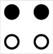
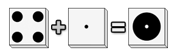
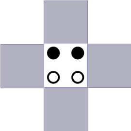
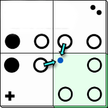
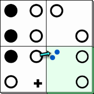
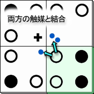
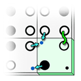
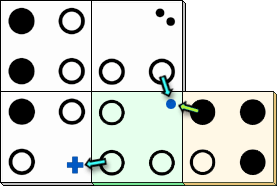

micropul 2 人用説明書 (私家版)
1 人用のソリティア パズルまたは 2 人用の対戦ゲーム
(version 1.2.1) Feb. 24, 2004 © Jean-Francois Lassonde
目次
- コンポーネント
- ゲームの手順
- ゲームの終了
- ゲームの勝敗
- 得点計算
- 用語
- 手札関係のルール
- タイルを場に出すときのルール
- マイクロプルと触媒の反応
- 自分の山札に関するルール
- マイクロプルグループにマーカーを乗せるときのルール
- 付録 A: 3 人でプレイする場合のルール変更点
- 付録 B: 4 人でプレイする場合のルール変更点
- 付録 C: アプリ版 micropul
コンポーネント
- タイル 48 枚
- マーカー 6 個 (2 色 3 個ずつ)


ゲームの手順
- 最初に親を決める。
- 親はスタートタイル以外のタイルを伏せたままシャッフルしコアをつくる。
- 各プレイヤーはコアから 6 枚のタイルを引き手札にする。
最初のプレイヤーをランダムに決める。
-
最初のプレイヤーから各プレイヤーは以下の 3 つのうちのどれかを実行する。パスはできない。
- 自分の手札のタイルを 1 枚、場に出す。
- 自分の山札から自分の手札にタイルを 1 枚補充する。
- マイクロプルグループに自分のマーカーを乗せる。
- ゲームが終了するまで 5 を繰り返す。
- ゲームが終わったら得点計算をする。
ゲームの終了
以下のいずれかの場合にゲームは終了する。
- コアから最後の 1 枚のタイルが引かれ、自分の山札もしくは相手の山札に加えられた。
- 自分の手番だが 3 つの選択肢のどれもプレイできない。
ゲームの勝敗
得点計算の結果、得点が多い方が勝者となる。
ただしゲームの終了 2 でゲームが終了した場合はプレイできなかったプレイヤーは即時に敗者となる。
得点計算
- 自分の山札のタイル 1 枚に付き 2 点
- 自分の手札のタイル 1 枚に付き 1 点
- 自分が確保した閉じたマイクロプルグループに含まれるマイクロプル 1 つにつき 1 点。
用語
- タイル
-
マイクロプルや触媒、空白が描かれている。
- スタートタイル
-

ゲームのセットアップ時に場に置かれる左の模様のタイル。
- コア
-
シャッフルされて伏せられたまま積まれたタイルの山。全てのタイルの供給元。

- 自分の山札
コアから引いた伏せられたままの自分専用のタイルの山。ゲームスタート時は存在しない。
- 手札
- プレイにより増減する。ゲームスタート時の枚数は 6 枚。
- 場
-
タイルを並べてゆく場所

- マーカー
-
マイクロプルグループに乗せる。
- マイクロプル
-


タイルに描かれている●と○。
- ビッグマイクロプル
-
タイルに描かれた大きなマイクロプル。右例のようにマイクロプル 4 つと触媒が合わさっている。ビッグマイクロプル上の触媒はタイルの 4 つの辺全てに接している。
 - マイクロプルグループ
-
ひとかたまりになった同じ色のマイクロプルの集まり。マイクロプル単体であってもマイクロプルグループである。
- 閉じている
-
マイクロプルグループのうち、色の異なるマイクロプル、触媒、空白に囲まれて周囲から切り離されており、それ以上マイクロプルが増えないマイクロプルグループを閉じたマイクロプルグループと呼び、そのマイクロプルグループは閉じているという。右図では赤、青、黄で塗られたマイクロプルグループが閉じている。

- 触媒
-
タイルに描かれている点と＋。1 点触媒、2 点触媒、＋触媒の 3 種類がある。


手札関係のルール
- 手札のタイルの数は 6 枚を越えてはならない。
- 手札の補充は自分の山札からしかできず直接コアから補充はできない。
タイルを場に出すときのルール
-
プレイするタイルはすでに置かれているタイルに隣接して繋がるように配置しなければならない。下図の色が塗られた場所にしかタイルを置くことができない。
 -
タイル同士は下図の #1 のように同じ色の最低一組のミクロプル同士が必ず接していなければならない。

上図の #2 のように異なる色のマイクロプルは接してはいけない。なので上図の薄緑色のタイルは実際には図のようには置くことができない。緑のタイルを 90 度時計回りにまわすと置くことができる。
タイルを置くことができた場合、プレイタイルと隣接タイルのマイクロプルと触媒が接していないか必ずチェックすること。なぜかというと触媒とマイクロプルが接すると反応するからである。マイクロプルと触媒の反応については次項で述べる。
触媒と空白は隣接タイルのマイクロプルに接してもかまわないし、接さなくてもかまわない。接していない場合は触媒反応は起きない。
マイクロプルと触媒の反応
- 
1 点触媒が隣接タイルのマイクロプルに接しているため、触媒が隣接タイルのマイクロプルと反応する。この場合触媒が 1 点触媒なので 1 枚のタイルをコアから自分の山札に伏せたまま引くことができる。
- 
2 点触媒が隣接タイルのマイクロプルに接しているため、触媒が隣接タイルのマイクロプルと反応する。この場合触媒が 2 点触媒なので 2 枚のタイルをコアから自分の山札に伏せたまま引くことができる。
- 
プレイタイルのマイクロプルは 1 つだが、隣接タイルに接している触媒が 2 つある。片方は 1 点触媒でもう片方は 2 点触媒。この場合隣接タイルの触媒の点の数の合計 3 つと同数のタイル 3 枚をコアから自分の山札に伏せた状態で引くことができる。
- 
この場合プレイタイル上の 1 点触媒が隣接タイルのマイクロプルと接しているので 1 枚を、またプレイタイル上の黒のマイクロプルが隣接タイルの 1 点触媒に接しているのでもう 1 枚を、合計 2 枚をコアから自分の山札に伏せた状態で引くことができる。
- 
プレイタイル上の 1 点触媒が隣接タイルのマイクロプルに接しており 1 枚のタイルをコアから自分の山札に伏せた状態で引くことができる。また白のマイクロプルが隣接タイルの＋触媒に接しているため、プレイヤーはもう一度連続してプレイすることができる。その際のプレイはゲームの手順 5 で概説した 3 つの中からどれかを実行する。その結果再び＋触媒がプレイタイルもしくは隣接タイルのマイクロプルに接した場合は再プレイは行うことはできない。つまり再プレイは自分のプレイでは 1 度のみ。
自分の山札に関するルール
常にタイルは伏せたままにしておき見てはならないし見せてもならない。
自分の山札にタイルがあるのなら自分の手番で自分の山札から手札にタイルを補充しても良い。
- ゲーム中における自分の山札の最大タイル数の制限はない。
マイクロプルグループにマーカーを乗せるときのルール
マイクロプルグループの確保
プレイヤーは自分の手番のときに好きなマイクロプルグループにマーカーを置くことができる。
マイクログループの上にマーカーを置くとそのマイクロプルグループが確保される。マーカーを置くとその取り消しはできず後で回収することもできない (カルカソンヌのミープルのようには回収されないしできない)。
確保したマイクロプルグループが最終的に閉じているなら、得点計算項で触れたように、そのマイクロプルグループに含まれるマイクロプルの数が全て自分の得点となる (ビッグマイクロプルは 1 点として計算する)。
しかしマイクロプルグループが閉じていなければそのマイクロプルグループは得点とはならない。マーカーをマイクロプルグループに置けないとき
前述したようにプレイヤーは自分の手番のときに好きなマイクロプルグループにマーカーを置くことができるが例外もある。
自分の手番の前にすでにマーカーが置かれていて、誰かによって確保済みのマイクロプルグループにはマーカーを置くことはできない。
プレイの結果マーカーを置いた複数のマイクロプルグループが統合された場合
まだ閉じていない複数のマイクロプルグループ上にそれぞれ異なるプレイヤーのマーカーが置かれているものとする。
プレイが進んだ結果それらのマイクロプルグループが 1 つに統合される場合がある。それらのマイクロプルグループは統合はされるが、マーカーによる確保は帳消しになり誰の得点源にもならない死んだマイクロプルグループになる。死んだマイクロプルグループは誰にも確保されておらず誰も確保できないマイクロプルグループになる。
このルールを応用して、相手のマーカーを乗せたマイクロプルグループに自分のマーカーを乗せたマイクロプルグループを統合させて相手のマイクロプルグループが相手の得点になるのを妨害する、ということもできる。もちろんその際、貴重な自分のマーカーを 1 つかそれ以上消費することになる。
また異なるパターンとして、まだ閉じていない複数のマイクロプルグループ上にそれぞれ自分のマーカーが置かれているものとする。
プレイの結果それらのマイクロプルグループが統合された場合、その統合されたマイクログループが最終的に閉じられた場合は自分の得点となる。ただしマーカーが複数乗っていてもマーカーの数に関係なく、マイクロプルの数だけ得点される。
付録 A: 3 人でプレイする場合のルール変更点
プレイヤーが 3 人の場合は以下のようにルールが変更され、あるいは変更されない。
- マーカーは 1 人につき 2 つに減らす。
- 時計回りにプレイする。
- その他は 2 人用ルールと同一。タイルも 48 枚のまま。
付録 B: 4 人でプレイする場合のルール変更点
プレイヤーが 4 人の場合は以下のようにルールが変更され、あるいは変更されない。
- 使用タイルは 2 セット、合計 96 枚。
- マーカーは 1 人につき 3 つで変更なし。
- 時計回りにプレイする。
- その他は 2 人用ルールと同一。
付録 C: アプリ版 micropul
以下はソリティア
- Micropulease : for Android (Google Play)
- github of Micropulease : for Android
- micropul : for Windows, MacOS and Linux (おしゃれでお勧め)
- micropul : for Windows and MacOS
以下はオンライン対戦。
- Micropul : BoardSpace online (Windows, MacOS, Linux, iPhone, Android, Firefox, Google Chrome, Safari; 使い方がさっぱりわからない)
レッツエンジョイ！！